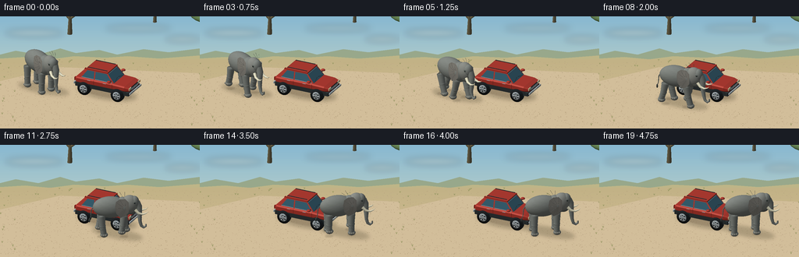
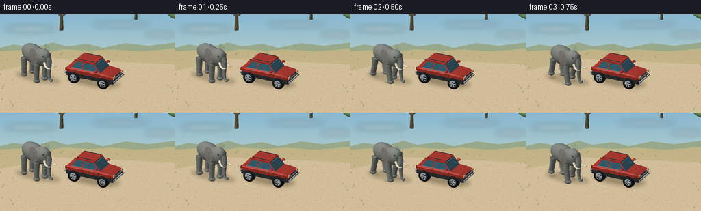

CODING AGENTS AS PIXEL WORLD MODELS
traex/GPT-6.1-Sol · dynamic_spatial_relationship_0066
点击播放 · 原生 RGB 像素
逐轮保存的候选
回放视频、检查图与代码变化。
每份候选均可单独播放。实际图片检查记录在下方工具轨迹中。
候选 01播放与检查图
点击播放 · 原生 RGB 像素


展开代码变化
--- 上一保存版本
+++ 本次保存版本
@@ -0,0 +1,366 @@
+"""Text-only scene generation, with a small NumPy triangle rasterizer."""
+from pathlib import Path
+import math
+import json
+import numpy as np
+from PIL import Image, ImageDraw, ImageFilter
+from artifact_io import save
+
+ROOT = Path(__file__).parent
+SPEC = json.loads((ROOT/'task_spec.json').read_text())
+W,H = SPEC['width'],SPEC['height']
+SS=3
+SW,SH=W*SS,H*SS
+RNG=np.random.default_rng(921)
+# Orthographic camera: the car's front points toward the right of the frame.
+right=np.array([.89442719,.44721360,0.])
+cam=np.array([.4056161,-.8112322,.4216370]); cam/=np.linalg.norm(cam)
+up=np.cross(cam,right)
+SCALE=20.3*SS
+TARGET=np.array([.15,.35,1.18])
+LIGHT=np.array([-.4,-.55,.85]); LIGHT/=np.linalg.norm(LIGHT)
+
+
+def project(p):
+ q=np.asarray(p)-TARGET
+ return np.stack([SW*.5+q@right*SCALE,SH*.57-q@up*SCALE,q@cam],axis=-1)
+
+class Mesh:
+ def __init__(self): self.p=[];self.n=[];self.c=[];self.f=[];self.sh=[]
+ def add(self,p,n,c,f,shine=0):
+ off=len(self.p);self.p.extend(p);self.n.extend(n)
+ c=np.asarray(c,dtype=float)
+ if c.ndim==1:c=np.tile(c,(len(p),1))
+ self.c.extend(c);self.f.extend(np.asarray(f)+off);self.sh.extend([shine]*len(p))
+ def arrays(self):return [np.asarray(a) for a in (self.p,self.n,self.c,self.f,self.sh)]
+
+
+def ellipsoid(m,center,radii,color,nu=28,nv=16,shine=0,rot=None,texture=0):
+ p=[];n=[];c=[];f=[]
+ for i in range(nv+1):
+ v=math.pi*i/nv
+ for j in range(nu):
+ u=2*math.pi*j/nu
+ q=np.array([math.sin(v)*math.cos(u),math.sin(v)*math.sin(u),math.cos(v)])
+ normal=q/np.asarray(radii);normal/=np.linalg.norm(normal)
+ pos=q*np.asarray(radii)
+ if rot is not None:pos=rot@pos;normal=rot@normal
+ p.append(np.asarray(center)+pos);n.append(normal)
+ detail=texture*(.5*math.sin(j*2.2+i*3.7)+.5*math.sin(j*.9-i*2.))
+ c.append(np.asarray(color)+detail)
+ for i in range(nv):
+ for j in range(nu):
+ a=i*nu+j;b=i*nu+(j+1)%nu;d=(i+1)*nu+j;e=(i+1)*nu+(j+1)%nu
+ if i>0:f.append([a,d,b])
+ if i<nv-1:f.append([b,d,e])
+ m.add(p,n,c,f,shine)
+
+
+def tube(m,points,radii,color,sides=12,shine=0):
+ points=np.asarray(points);p=[];n=[];f=[]
+ if np.isscalar(radii):radii=[radii]*len(points)
+ for i,pt in enumerate(points):
+ tangent=points[min(i+1,len(points)-1)]-points[max(i-1,0)]
+ tangent/=np.linalg.norm(tangent)
+ axis=np.array([0.,1.,0.]) if abs(tangent[1])<.9 else np.array([1.,0.,0.])
+ a=np.cross(tangent,axis);a/=np.linalg.norm(a);b=np.cross(tangent,a)
+ for j in range(sides):
+ normal=math.cos(j*2*math.pi/sides)*a+math.sin(j*2*math.pi/sides)*b
+ p.append(pt+normal*radii[i]);n.append(normal)
+ for i in range(len(points)-1):
+ for j in range(sides):
+ a=i*sides+j;b=i*sides+(j+1)%sides;c=(i+1)*sides+j;d=(i+1)*sides+(j+1)%sides
+ f.extend([[a,b,c],[b,d,c]])
+ # Solid end disks, important for feet and tire sidewalls.
+ for i,sgn in [(0,-1),(len(points)-1,1)]:
+ p.append(points[i]);t=points[min(i+1,len(points)-1)]-points[max(i-1,0)];t=t/np.linalg.norm(t)*sgn;n.append(t)
+ center=len(p)-1
+ for j in range(sides):
+ a=i*sides+j;b=i*sides+(j+1)%sides
+ f.append([center,b,a] if i==0 else [center,a,b])
+ m.add(p,n,color,f,shine)
+
+
+def quad(m,pts,color,shine=0):
+ pts=np.asarray(pts,dtype=float);normal=np.cross(pts[1]-pts[0],pts[2]-pts[0]);normal/=np.linalg.norm(normal)
+ m.add(pts,np.tile(normal,(4,1)),color,[[0,1,2],[0,2,3]],shine)
+
+
+def box(m,lo,hi,color,shine=0):
+ x,y,z=lo;X,Y,Z=hi
+ for p in [ [[x,y,z],[x,y,Z],[x,Y,Z],[x,Y,z]],[[X,y,z],[X,Y,z],[X,Y,Z],[X,y,Z]],
+ [[x,y,z],[X,y,z],[X,y,Z],[x,y,Z]],[[x,Y,z],[x,Y,Z],[X,Y,Z],[X,Y,z]],
+ [[x,y,Z],[X,y,Z],[X,Y,Z],[x,Y,Z]],[[x,y,z],[x,Y,z],[X,Y,z],[X,y,z]] ]:
+ quad(m,p,color,shine)
+
+
+def raster(mesh,bg,zbuf=None):
+ p,n,c,f,sh=mesh.arrays();pix=np.asarray(bg,dtype=float).copy()
+ if zbuf is None:zbuf=np.full((SH,SW),-1e8,dtype=float)
+ else:zbuf=zbuf.copy()
+ if not len(p):return pix,zbuf
+ n=n/np.maximum(np.linalg.norm(n,axis=1,keepdims=True),1e-12)
+ diffuse=np.maximum(n@LIGHT,0)
+ half=(LIGHT+cam);half/=np.linalg.norm(half)
+ spec=np.maximum(n@half,0)**35*sh
+ # Warm key light and cool, open-sky fill.
+ colors=np.clip(c*(.47+.56*diffuse[:,None])+np.array([13,17,23])*(.35+.35*n[:,2,None])+spec[:,None]*110,0,255)
+ pp=project(p)
+ for tri in f:
+ a,b,d=pp[tri]
+ # Backface rejection uses actual geometry, not vertex normals.
+ nor=np.cross(p[tri[1]]-p[tri[0]],p[tri[2]]-p[tri[0]])
+ if nor@cam<=1e-10:continue
+ x0=max(0,int(math.floor(min(a[0],b[0],d[0]))));x1=min(SW-1,int(math.ceil(max(a[0],b[0],d[0]))))
+ y0=max(0,int(math.floor(min(a[1],b[1],d[1]))));y1=min(SH-1,int(math.ceil(max(a[1],b[1],d[1]))))
+ if x0>x1 or y0>y1:continue
+ denom=(b[1]-d[1])*(a[0]-d[0])+(d[0]-b[0])*(a[1]-d[1])
+ if abs(denom)<1e-8:continue
+ xx,yy=np.meshgrid(np.arange(x0,x1+1)+.5,np.arange(y0,y1+1)+.5)
+ w0=((b[1]-d[1])*(xx-d[0])+(d[0]-b[0])*(yy-d[1]))/denom
+ w1=((d[1]-a[1])*(xx-d[0])+(a[0]-d[0])*(yy-d[1]))/denom
+ w2=1-w0-w1
+ zz=w0*a[2]+w1*b[2]+w2*d[2]
+ mask=(w0>=-1e-7)&(w1>=-1e-7)&(w2>=-1e-7)&(zz>zbuf[y0:y1+1,x0:x1+1])
+ if not mask.any():continue
+ cc=colors[tri]
+ col=w0[:,:,None]*cc[0]+w1[:,:,None]*cc[1]+w2[:,:,None]*cc[2]
+ pix[y0:y1+1,x0:x1+1][mask]=col[mask]
+ zbuf[y0:y1+1,x0:x1+1][mask]=zz[mask]
+ return pix,zbuf
+
+
+def background():
+ yy=np.arange(SH)[:,None,None]/SH
+ top=np.array([136,183,207]);bottom=np.array([226,224,191])
+ rgb=np.tile(top[None,None,:]*(1-yy)+bottom[None,None,:]*yy,(1,SW,1))
+ im=Image.fromarray(np.uint8(rgb));d=ImageDraw.Draw(im)
+ # Soft clouds, distant blue hills, and sunlit savanna.
+ cloud=Image.new('RGBA',(SW,SH));cd=ImageDraw.Draw(cloud)
+ for cx,cy,rx,ry in [(44,21,37,4),(177,15,42,3),(234,29,22,3)]:
+ cd.ellipse(((cx-rx)*SS,(cy-ry)*SS,(cx+rx)*SS,(cy+ry)*SS),fill=(255,248,222,70))
+ im=Image.alpha_composite(im.convert('RGBA'),cloud.filter(ImageFilter.GaussianBlur(4*SS))).convert('RGB');d=ImageDraw.Draw(im)
+ d.polygon([(0,54*SS),(0,49*SS),(20*SS,44*SS),(49*SS,49*SS),(77*SS,41*SS),(97*SS,47*SS),(127*SS,43*SS),(150*SS,49*SS),(184*SS,42*SS),(216*SS,46*SS),(256*SS,41*SS),(SW,SH),(0,SH)],fill=(151,167,139))
+ d.polygon([(0,54*SS),(32*SS,52*SS),(64*SS,55*SS),(95*SS,51*SS),(135*SS,53*SS),(163*SS,51*SS),(204*SS,54*SS),(256*SS,50*SS),(SW,SH),(0,SH)],fill=(188,180,135))
+ arr=np.asarray(im).copy()
+ for y in range(55*SS,SH):
+ a=(y-55*SS)/(SH-55*SS)
+ arr[y]=np.array([192,177,134])*(1-a)+np.array([211,190,150])*a
+ im=Image.fromarray(arr);d=ImageDraw.Draw(im)
+ # A broad unmarked dirt turnout makes the encounter legible.
+ d.polygon([(0,83*SS),(77*SS,65*SS),(SW,73*SS),(SW,SH),(0,SH)],fill=(208,188,153))
+ # Small, fixed earth grains rather than per-frame noise.
+ for _ in range(1900):
+ x=RNG.uniform(0,SW);y=RNG.uniform(58*SS,SH);r=RNG.uniform(.09,.32)*SS
+ col=tuple(np.array([181,163,128])+RNG.integers(-8,17))
+ d.ellipse((x-r,y-r*.45,x+r,y+r*.45),fill=col)
+ for _ in range(100):
+ x=RNG.uniform(0,SW);y=RNG.uniform(56*SS,SH)
+ if 22*SS<x<244*SS and y>70*SS:continue
+ length=(.7+2.0*(y/SH))*SS
+ for k in range(3):d.line((x,y,x+(k-1)*SS,y-length),fill=(139,143,90),width=1)
+ return im
+
+
+def acacia(m,x,y,size):
+ trunk=np.array([x,y,0.]); brown=(112,101,72)
+ tube(m,[trunk,trunk+[.02,0,size*.55],trunk+[.2,0,size]], [.075*size,.045*size,.018*size],brown,7)
+ for side in [-1,1]:tube(m,[trunk+[0,0,size*.48],trunk+[side*.4*size,0,size*.82],trunk+[side*.65*size,0,size]], [.04*size,.025*size,.005*size],brown,7)
+ for dx,dy in [(0,0),(-.48,.03),(.47,.02),(.08,.35)]:
+ ellipsoid(m,trunk+[dx*size,dy*size,size],(.7*size,.52*size,.19*size),(104,132,80),18,8,texture=4)
+
+
+def car(m):
+ red=(169,50,36);trim=(44,48,47);chrome=(166,174,174);glass=(59,99,113)
+ # Four all-terrain wheels.
+ for x in [-1.17,1.17]:
+ for y in [-.83,.83]:
+ tube(m,[[x,y-.145,.43],[x,y+.145,.43]],[.425,.425],(29,31,30),32)
+ outer=y+(-.155 if y<0 else .155)
+ tube(m,[[x,outer,.43],[x,outer+(-.015 if y<0 else .015),.43]],[.268,.268],chrome,24,.3)
+ tube(m,[[x,outer-.02*np.sign(y),.43],[x,outer+.023*np.sign(y),.43]],[.18,.18],(55,62,62),24,.1)
+ for a in np.linspace(0,2*np.pi,6,endpoint=False):
+ tube(m,[[x+.05*math.cos(a),outer+.03*np.sign(y),.43+.05*math.sin(a)],[x+.23*math.cos(a),outer+.03*np.sign(y),.43+.23*math.sin(a)]],.034,(188,191,188),7,.25)
+ ellipsoid(m,(x,outer+.05*np.sign(y),.43),(.077,.025,.077),(138,145,145),14,8,.4)
+ # Embossed tire tread around its circumference.
+ for a in np.linspace(0,2*np.pi,28,endpoint=False):
+ tube(m,[[x+.424*math.cos(a),y-.115,.43+.424*math.sin(a)],[x+.424*math.cos(a+.018),y+.115,.43+.424*math.sin(a+.018)]],.012,(44,46,44),5)
+ box(m,(-1.84,-.82,.47),(1.92,.82,.70),trim)
+ # Rounded body rings.
+ rings=[(-1.89,.72,.72,1.00),(-1.72,.86,.69,1.10),(-.7,.88,.69,1.11),(.62,.87,.69,1.12),(1.62,.85,.71,1.07),(1.93,.76,.72,1.00)]
+ pp=[]
+ for x,w,z0,z1 in rings:
+ pp.extend([[x,-w*.86,z0],[x,-w,z0+.10],[x,-w,z1-.07],[x,-w*.9,z1],[x,w*.9,z1],[x,w,z1-.07],[x,w,z0+.1],[x,w*.86,z0]])
+ for i in range(len(rings)-1):
+ for j in range(8):quad(m,[pp[i*8+j],pp[(i+1)*8+j],pp[(i+1)*8+(j+1)%8],pp[i*8+(j+1)%8]],red,.30)
+ quad(m,[pp[-8+i] for i in [0,7,4,3]],red,.3)
+ quad(m,[pp[i] for i in [0,3,4,7]],red,.3)
+ # Roof and raked windscreen.
+ quad(m,[[-1.53,-.76,1.08],[-1.10,-.67,1.72],[.38,-.67,1.72],[.88,-.78,1.09]],red,.2)
+ quad(m,[[-1.53,.76,1.08],[.88,.78,1.09],[.38,.67,1.72],[-1.10,.67,1.72]],red,.2)
+ box(m,(-1.13,-.69,1.69),(.40,.69,1.76),red,.4)
+ quad(m,[[.86,-.735,1.13],[.86,.735,1.13],[.375,.625,1.68],[.375,-.625,1.68]],glass,.35)
+ # Subtle sky reflection band on the front glass.
+ quad(m,[[.47,-.615,1.56],[.47,.615,1.56],[.397,.625,1.66],[.397,-.625,1.66]],(125,163,172),.20)
+ quad(m,[[-1.5,-.7,1.13],[-1.09,-.62,1.66],[-1.09,.62,1.66],[-1.5,.7,1.13]],glass,.25)
+ for s in [-1,1]:
+ # Near and far side windows, separated by a substantial pillar.
+ y0=.786*s;y1=.684*s
+ for a,b,topa,topb in [(-1.40,-.54,-1.03,-.54),(-.46,.75,-.46,.34)]:
+ pts=[[a,y0,1.15],[b,y0,1.15],[topb,y1,1.65],[topa,y1,1.65]]
+ if s==1:pts=pts[::-1]
+ quad(m,pts,glass,.20)
+ tube(m,[pts[0],pts[1]],.016,chrome,6)
+ # Reflective highlight on windows, door seams, and handles.
+ for xx in [-.50,.80]:tube(m,[[xx,.882*s,.74],[xx,.888*s,1.105]],.008,(92,37,28),5)
+ for xx in [-.95,.16]:box(m,(xx,.887*s-.013,1.034),(xx+.21,.887*s+.013,1.061),chrome,.25)
+ tube(m,[[.65,.75*s,1.26],[.64,1.02*s,1.28]],.032,trim,8)
+ ellipsoid(m,[.65,1.025*s,1.30],(.14,.12,.075),red,16,9,.3)
+ tube(m,[[-1.05,.58*s,1.82],[.32,.58*s,1.82]],.023,trim,8)
+ box(m,(-1.75,.876*s-.012,.735),(1.76,.876*s+.012,.776),trim)
+ # Front face: grille, rectangular headlamps, and silver bumper.
+ box(m,(1.925,-.48,.755),(1.955,.48,.958),(32,39,38))
+ for z in [.79,.845,.900]:tube(m,[[1.96,-.455,z],[1.96,.455,z]],.014,chrome,8,.4)
+ for y in [-.64,.64]:
+ box(m,(1.931,y-.16,.855),(1.968,y+.16,1.006),(229,225,183),.35)
+ box(m,(1.965,y+.10*np.sign(y)-.025,.859),(1.978,y+.10*np.sign(y)+.025,.99),(235,151,55),.15)
+ box(m,(1.96,-.81,.585),(2.035,.81,.689),chrome,.3)
+ box(m,(2.041,-.20,.604),(2.045,.20,.70),(232,224,196))
+ box(m,(-1.97,-.78,.57),(-1.9,.78,.69),chrome,.2)
+ for y in [-.73,.73]:box(m,(-1.902,y-.08,.82),(-1.885,y+.08,1.04),(185,33,26),.25)
+ # Windshield wipers.
+ for s in [-1,1]:tube(m,[[.855,.57*s,1.145],[.765,.06*s,1.264]],.011,trim,6)
+
+
+def elephant(t):
+ m=Mesh();gray=(124,126,117);dark=(104,106,97)
+ moving=np.clip((t-.25)/3.70,0,1)
+ # Smooth displacement with almost constant speed through the central section.
+ u=moving*moving*(3-2*moving)
+ pos=np.array([-3.75+7.0*u,-.25-1.0*math.sin(math.pi*u)+1.02*u*u,0.])
+ # Slight steering around the bumper, rather than passing through the car.
+ dx=7.;dy=-math.pi*math.cos(math.pi*u)+2.04*u
+ yaw=math.atan2(dy,dx)
+ phase=2*math.pi*(moving*2.85)
+ activity=math.sin(math.pi*min(1,moving*5)) if moving<.10 else (min(1,(1-moving)*9) if moving>.89 else 1.)
+ bob=.025*math.cos(2*phase)*activity
+ ellipsoid(m,[-.23,0,1.88+bob],(1.12,.59,.70),gray,36,22,texture=2.6)
+ ellipsoid(m,[.55,0,1.88+bob],(.58,.52,.66),gray,28,18,texture=2)
+ # Four articulated, thick pillar legs with staggered walking phases.
+ for x in [-.82,.61]:
+ for y in [-.385,.385]:
+ offset=(0 if x>0 else math.pi)+ (math.pi if y>0 else 0)
+ swing=math.sin(phase+offset)*activity
+ lift=max(0,math.cos(phase+offset))*activity*.20
+ hip=np.array([x,y,1.43+bob]);knee=np.array([x+.15*swing,y,.76+lift*.28]);ankle=np.array([x+.34*swing,y,.18+lift])
+ tube(m,[hip,knee,ankle],[.245,.194,.19],gray,16)
+ ellipsoid(m,knee,(.211,.20,.22),gray,18,10,texture=2)
+ ellipsoid(m,ankle+[.018,0,-.034],(.245,.222,.167),gray,20,12)
+ # Pale toenails, seen along the outer foot.
+ for nx in [-.11,.01,.13]:ellipsoid(m,ankle+[nx,-.207,.00],(.042,.027,.061),(159,153,135),10,7)
+ for z in [.52,.58]:
+ pts=[]
+ for a in np.linspace(-math.pi*.82,-math.pi*.18,9):pts.append([knee[0]+.195*math.cos(a),y+.195*math.sin(a),z+lift*.5])
+ tube(m,pts,.008,dark,5)
+ # Tail and its hair tuft.
+ ts=.10*math.sin(phase*.5)*activity
+ tail=[[-1.23,.12,2.00],[-1.44,.13+ts,1.65],[-1.47,.14+ts,1.22],[-1.56,.15+ts,.92]]
+ tube(m,tail,[.043,.035,.025,.013],dark,10)
+ ellipsoid(m,tail[-1],(.055,.049,.135),(67,70,64),14,10)
+ # Head: domed forehead, cheek, and lower jaw.
+ ellipsoid(m,[.98,0,2.06+bob],(.55,.435,.61),(132,132,122),32,22,texture=2)
+ ellipsoid(m,[1.28,-.015,2.21+bob],(.305,.325,.41),gray,24,16,texture=2)
+ ellipsoid(m,[1.08,0,1.65+bob],(.39,.30,.27),dark,24,14)
+ # Big African elephant ears: hand-shaped fans, not circular disks.
+ outline=np.array([[.22,.41],[.01,.65],[-.34,.64],[-.58,.46],[-.64,.08],[-.57,-.34],[-.32,-.66],[.02,-.53],[.22,-.27]])
+ for side in [1,-1]:
+ p=[];n=[];c=[];f=[]
+ center=np.array([.68,side*.435,2.03+bob]);nrings=6;N=len(outline)
+ p.append(center);n.append([.12,side,.15]);c.append([126,122,111])
+ for ri in range(1,nrings+1):
+ r=ri/nrings
+ for j,(xx,zz) in enumerate(outline):
+ # Rounded rim and shallow dish catch the warm sunlight.
+ yy=side*(.435+.21*math.sin(r*math.pi*.73)+.02*math.sin(phase)*activity)
+ p.append([.68+xx*r,yy,2.03+bob+zz*r])
+ n.append([.09,side,.06+.22*zz]);c.append(np.array([130,125,114])-(4 if ri==nrings else 0)+2*math.sin(j*2.4+ri))
+ for j in range(N):f.append([0,1+j,1+(j+1)%N] if side<0 else [0,1+(j+1)%N,1+j])
+ for ri in range(nrings-1):
+ for j in range(N):
+ a=1+ri*N+j;b=1+ri*N+(j+1)%N;d=a+N;e=b+N
+ f.extend([[a,d,b],[b,d,e]] if side<0 else [[a,b,d],[b,e,d]])
+ m.add(p,n,c,f)
+ # Soft folds radiate across the ear.
+ for j in [1,2,3,4,5,6]:
+ xx,zz=outline[j];pts=[]
+ for r in np.linspace(.23,.92,8):pts.append([.68+xx*r,side*(.435+.21*math.sin(r*math.pi*.73)+.009+.02*math.sin(phase)*activity),2.03+bob+zz*r])
+ tube(m,pts,.006,(105,104,94),5)
+ # Eye on each side, tiny ivory highlight and brow.
+ for side in [-1,1]:
+ ellipsoid(m,[1.27,side*.318,2.27+bob],(.097,.047,.070),(92,96,87),16,10)
+ ellipsoid(m,[1.29,side*.359,2.278+bob],(.041,.018,.034),(22,26,23),16,10,.3)
+ ellipsoid(m,[1.307,side*.372,2.292+bob],(.010,.007,.010),(225,229,210),8,6)
+ tube(m,[[1.18,side*.337,2.34+bob],[1.28,side*.34,2.365+bob],[1.37,side*.30,2.34+bob]],.026,gray,8)
+ # Tusks bend out and forward, with a pointed, slightly upturned end.
+ for side in [-1,1]:
+ tube(m,[[1.32,side*.24,1.78+bob],[1.52,side*.31,1.57+bob],[1.80,side*.33,1.49+bob],[2.02,side*.32,1.56+bob],[2.15,side*.30,1.68+bob]],[.102,.082,.057,.032,.002],(223,216,184),16,.16)
+ # Long tapering trunk with a natural curled tip and transverse skin wrinkles.
+ sway=.065*math.sin(phase+.4)*activity
+ trunk=np.array([[1.42,0,2.17+bob],[1.57,-.005,1.88+bob],[1.59,-.025,1.56+bob],[1.61,-.045,1.21+bob],[1.64+sway,-.065,.87+bob],[1.72+sway,-.07,.57+bob],[1.88+sway,-.07,.46+bob],[2.015+sway,-.07,.55+bob],[2.015+sway,-.07,.68+bob]])
+ radii=[.225,.205,.17,.14,.11,.09,.076,.060,.044]
+ tube(m,trunk,radii,gray,20)
+ for i in range(2,6):
+ for frac in [.25,.61]:
+ pt=trunk[i]*(1-frac)+trunk[i+1]*frac;rr=radii[i]*(1-frac)+radii[i+1]*frac
+ tangent=trunk[i+1]-trunk[i];tangent/=np.linalg.norm(tangent);aa=np.cross(tangent,[0,1,0]);aa/=np.linalg.norm(aa);bb=np.cross(tangent,aa)
+ pts=[pt+(rr+.002)*(math.cos(a)*aa+math.sin(a)*bb) for a in np.linspace(0,2*np.pi,19)]
+ tube(m,pts,.006,(104,108,100),5)
+ # Transform the whole animal without changing its anatomy.
+ ca,sa=math.cos(yaw),math.sin(yaw);rot=np.array([[ca,-sa,0],[sa,ca,0],[0,0,1.]])
+ m.p=(np.asarray(m.p)@rot.T+pos).tolist();m.n=(np.asarray(m.n)@rot.T).tolist()
+ return m,pos,yaw
+
+
+def shadow_layer(base,pos,yaw):
+ lay=Image.new('RGBA',(SW,SH));d=ImageDraw.Draw(lay)
+ def ellipse_world(cx,cy,rx,ry,alpha):
+ pts=[]
+ for a in np.linspace(0,2*math.pi,60):
+ q=project([cx+rx*math.cos(a),cy+ry*math.sin(a),.008]);pts.append(tuple(q[:2]))
+ d.polygon(pts,fill=(61,51,33,alpha))
+ ellipse_world(.25,1.16,2.04,1.0,65)
+ ellipse_world(pos[0]+.16,pos[1]+.13,1.74,.65,64)
+ soft=lay.filter(ImageFilter.GaussianBlur(2.3*SS))
+ base=Image.alpha_composite(base.convert('RGBA'),soft)
+ contact=Image.new('RGBA',(SW,SH));d=ImageDraw.Draw(contact)
+ ellipse_world(.25,1.16,1.70,.65,35) # soft layer already establishes car contact
+ for x in [-.82,.61]:
+ for y in [-.385,.385]:
+ q=np.array([x*math.cos(yaw)-y*math.sin(yaw),x*math.sin(yaw)+y*math.cos(yaw)])+pos[:2]
+ px=project([q[0],q[1],.01]);d.ellipse((px[0]-5*SS,px[1]-1.25*SS,px[0]+5*SS,px[1]+1.25*SS),fill=(69,59,40,52))
+ return Image.alpha_composite(base,contact.filter(ImageFilter.GaussianBlur(.8*SS))).convert('RGB')
+
+
+def main():
+ bg=background();static=Mesh()
+ for x,y,s in [(-5.8,8,2.2),(-1.8,12,1.65),(4.5,10,2.4),(7.6,13,1.6),(-9,15,2.8)]:acacia(static,x,y,s)
+ # Place the stationary car slightly farther from the viewer.
+ c=Mesh();car(c);c.p=(np.asarray(c.p)+np.array([.25,1.15,0])).tolist()
+ off=len(static.p);static.p.extend(c.p);static.n.extend(c.n);static.c.extend(c.c);static.f.extend((np.asarray(c.f)+off).tolist());static.sh.extend(c.sh)
+ static_rgb,static_z=raster(static,bg)
+ mask=static_z>-1e7
+ frames=[]
+ for k in range(SPEC['frames']):
+ m,pos,yaw=elephant(k/SPEC['fps'])
+ ground=np.asarray(shadow_layer(bg,pos,yaw),dtype=float).copy();ground[mask]=static_rgb[mask]
+ rgb,_=raster(m,ground,static_z)
+ im=Image.fromarray(np.uint8(np.clip(rgb,0,255))).resize((W,H),Image.Resampling.LANCZOS)
+ # A restrained photographic finishing curve.
+ a=np.asarray(im,dtype=float)/255
+ a=np.clip((a-.5)*1.025+.5,0,1)
+ frames.append(np.uint8(np.round(a*255)))
+ print(f'frame {k+1}/{SPEC["frames"]}',flush=True)
+ save(np.stack(frames),ROOT)
+ print('Saved RGB video artifacts.',flush=True)
+
+if __name__=='__main__':main()
候选 02播放与检查图
点击播放 · 原生 RGB 像素
展开代码变化
--- 上一保存版本
+++ 本次保存版本
@@ -196,8 +196,8 @@
quad(m,[pp[-8+i] for i in [0,7,4,3]],red,.3)
quad(m,[pp[i] for i in [0,3,4,7]],red,.3)
# Roof and raked windscreen.
- quad(m,[[-1.53,-.76,1.08],[-1.10,-.67,1.72],[.38,-.67,1.72],[.88,-.78,1.09]],red,.2)
- quad(m,[[-1.53,.76,1.08],[.88,.78,1.09],[.38,.67,1.72],[-1.10,.67,1.72]],red,.2)
+ quad(m,[[.88,-.78,1.09],[.38,-.67,1.72],[-1.10,-.67,1.72],[-1.53,-.76,1.08]],red,.2)
+ quad(m,[[-1.10,.67,1.72],[.38,.67,1.72],[.88,.78,1.09],[-1.53,.76,1.08]],red,.2)
box(m,(-1.13,-.69,1.69),(.40,.69,1.76),red,.4)
quad(m,[[.86,-.735,1.13],[.86,.735,1.13],[.375,.625,1.68],[.375,-.625,1.68]],glass,.35)
# Subtle sky reflection band on the front glass.
可观测工具轨迹
实际执行的命令与返回图片。
命令 1exit 0
/bin/bash -lc 'ls -la && cat prompt.txt && cat GENERATION_RULES.md && cat task_spec.json'
命令 2exit 0
/bin/bash -lc "cat artifact_io.py && python - <<'PY' import importlib.util for x in ['numpy','PIL','scipy']: print(x, bool(importlib.util.find_spec(x))) PY"
命令 3exit 0
/bin/bash -lc "cat > generate.py <<'PY'
\"\"\"Text-only scene generation, with a small NumPy triangle rasterizer.\"\"\"
from pathlib import Path
import math
import json
import numpy as np
from PIL import Image, ImageDraw, ImageFilter
from artifact_io import save
ROOT = Path(__file__).parent
SPEC = json.loads((ROOT/'task_spec.json').read_text())
W,H = SPEC['width'],SPEC['height']
SS=3
SW,SH=W*SS,H*SS
RNG=np.random.default_rng(921)
# Orthographic camera: the car's front points toward the right of the frame.
right=np.array([.89442719,.44721360,0.])
cam=np.array([.4056161,-.8112322,.4216370]); cam/=np.linalg.norm(cam)
up=np.cross(cam,right)
SCALE=20.3*SS
TARGET=np.array([.15,.35,1.18])
LIGHT=np.array([-.4,-.55,.85]); LIGHT/=np.linalg.norm(LIGHT)
def project(p):
q=np.asarray(p)-TARGET
return np.stack([SW*.5+q@right*SCALE,SH*.57-q@up*SCALE,q@cam],axis=-1)
class Mesh:
def __init__(self): self.p=[];self.n=[];self.c=[];self.f=[];self.sh=[]
def add(self,p,n,c,f,shine=0):
off=len(self.p);self.p.extend(p);self.n.extend(n)
c=np.asarray(c,dtype=float)
if c.ndim==1:c=np.tile(c,(len(p),1))
self.c.extend(c);self.f.extend(np.asarray(f)+off);self.sh.extend([shine]*len(p))
def arrays(self):return [np.asarray(a) for a in (self.p,self.n,self.c,self.f,self.sh)]
def ellipsoid(m,center,radii,color,nu=28,nv=16,shine=0,rot=None,texture=0):
p=[];n=[];c=[];f=[]
for i in range(nv+1):
v=math.pi*i/nv
for j in range(nu):
u=2*math.pi*j/nu
q=np.array([math.sin(v)*math.cos(u),math.sin(v)*math.sin(u),math.cos(v)])
normal=q/np.asarray(radii);normal/=np.linalg.norm(normal)
pos=q*np.asarray(radii)
if rot is not None:pos=rot@pos;normal=rot@normal
p.append(np.asarray(center)+pos);n.append(normal)
detail=texture*(.5*math.sin(j*2.2+i*3.7)+.5*math.sin(j*.9-i*2.))
c.append(np.asarray(color)+detail)
for i in range(nv):
for j in range(nu):
a=i*nu+j;b=i*nu+(j+1)%nu;d=(i+1)*nu+j;e=(i+1)*nu+(j+1)%nu
if i>0:f.append([a,d,b])
if i<nv-1:f.append([b,d,e])
m.add(p,n,c,f,shine)
def tube(m,points,radii,color,sides=12,shine=0):
points=np.asarray(points);p=[];n=[];f=[]
if np.isscalar(radii):radii=[radii]*len(points)
for i,pt in enumerate(points):
tangent=points[min(i+1,len(points)-1)]-points[max(i-1,0)]
tangent/=np.linalg.norm(tangent)
axis=np.array([0.,1.,0.]) if abs(tangent[1])<.9 else np.array([1.,0.,0.])
a=np.cross(tangent,axis);a/=np.linalg.norm(a);b=np.cross(tangent,a)
for j in range(sides):
normal=math.cos(j*2*math.pi/sides)*a+math.sin(j*2*math.pi/sides)*b
p.append(pt+normal*radii[i]);n.append(normal)
for i in range(len(points)-1):
for j in range(sides):
a=i*sides+j;b=i*sides+(j+1)%sides;c=(i+1)*sides+j;d=(i+1)*sides+(j+1)%sides
f.extend([[a,b,c],[b,d,c]])
# Solid end disks, important for feet and tire sidewalls.
for i,sgn in [(0,-1),(len(points)-1,1)]:
p.append(points[i]);t=points[min(i+1,len(points)-1)]-points[max(i-1,0)];t=t/np.linalg.norm(t)*sgn;n.append(t)
center=len(p)-1
for j in range(sides):
a=i*sides+j;b=i*sides+(j+1)%sides
f.append([center,b,a] if i==0 else [center,a,b])
m.add(p,n,color,f,shine)
def quad(m,pts,color,shine=0):
pts=np.asarray(pts,dtype=float);normal=np.cross(pts[1]-pts[0],pts[2]-pts[0]);normal/=np.linalg.norm(normal)
m.add(pts,np.tile(normal,(4,1)),color,[[0,1,2],[0,2,3]],shine)
def box(m,lo,hi,color,shine=0):
x,y,z=lo;X,Y,Z=hi
for p in [ [[x,y,z],[x,y,Z],[x,Y,Z],[x,Y,z]],[[X,y,z],[X,Y,z],[X,Y,Z],[X,y,Z]],
[[x,y,z],[X,y,z],[X,y,Z],[x,y,Z]],[[x,Y,z],[x,Y,Z],[X,Y,Z],[X,Y,z]],
[[x,y,Z],[X,y,Z],[X,Y,Z],[x,Y,Z]],[[x,y,z],[x,Y,z],[X,Y,z],[X,y,z]] ]:
quad(m,p,color,shine)
def raster(mesh,bg,zbuf=None):
p,n,c,f,sh=mesh.arrays();pix=np.asarray(bg,dtype=float).copy()
if zbuf is None:zbuf=np.full((SH,SW),-1e8,dtype=float)
else:zbuf=zbuf.copy()
if not len(p):return pix,zbuf
n=n/np.maximum(np.linalg.norm(n,axis=1,keepdims=True),1e-12)
diffuse=np.maximum(n@LIGHT,0)
half=(LIGHT+cam);half/=np.linalg.norm(half)
spec=np.maximum(n@half,0)**35*sh
# Warm key light and cool, open-sky fill.
colors=np.clip(c*(.47+.56*diffuse[:,None])+np.array([13,17,23])*(.35+.35*n[:,2,None])+spec[:,None]*110,0,255)
pp=project(p)
for tri in f:
a,b,d=pp[tri]
# Backface rejection uses actual geometry, not vertex normals.
nor=np.cross(p[tri[1]]-p[tri[0]],p[tri[2]]-p[tri[0]])
if nor@cam<=1e-10:continue
x0=max(0,int(math.floor(min(a[0],b[0],d[0]))));x1=min(SW-1,int(math.ceil(max(a[0],b[0],d[0]))))
y0=max(0,int(math.floor(min(a[1],b[1],d[1]))));y1=min(SH-1,int(math.ceil(max(a[1],b[1],d[1]))))
if x0>x1 or y0>y1:continue
denom=(b[1]-d[1])*(a[0]-d[0])+(d[0]-b[0])*(a[1]-d[1])
if abs(denom)<1e-8:continue
xx,yy=np.meshgrid(np.arange(x0,x1+1)+.5,np.arange(y0,y1+1)+.5)
w0=((b[1]-d[1])*(xx-d[0])+(d[0]-b[0])*(yy-d[1]))/denom
w1=((d[1]-a[1])*(xx-d[0])+(a[0]-d[0])*(yy-d[1]))/denom
w2=1-w0-w1
zz=w0*a[2]+w1*b[2]+w2*d[2]
mask=(w0>=-1e-7)&(w1>=-1e-7)&(w2>=-1e-7)&(zz>zbuf[y0:y1+1,x0:x1+1])
if not mask.any():continue
cc=colors[tri]
col=w0[:,:,None]*cc[0]+w1[:,:,None]*cc[1]+w2[:,:,None]*cc[2]
pix[y0:y1+1,x0:x1+1][mask]=col[mask]
zbuf[y0:y1+1,x0:x1+1][mask]=zz[mask]
return pix,zbuf
def background():
yy=np.arange(SH)[:,None,None]/SH
top=np.array([136,183,207]);bottom=np.array([226,224,191])
rgb=np.tile(top[None,None,:]*(1-yy)+bottom[None,None,:]*yy,(1,SW,1))
im=Image.fromarray(np.uint8(rgb));d=ImageDraw.Draw(im)
# Soft clouds, distant blue hills, and sunlit savanna.
cloud=Image.new('RGBA',(SW,SH));cd=ImageDraw.Draw(cloud)
for cx,cy,rx,ry in [(44,21,37,4),(177,15,42,3),(234,29,22,3)]:
cd.ellipse(((cx-rx)*SS,(cy-ry)*SS,(cx+rx)*SS,(cy+ry)*SS),fill=(255,248,222,70))
im=Image.alpha_composite(im.convert('RGBA'),cloud.filter(ImageFilter.GaussianBlur(4*SS))).convert('RGB');d=ImageDraw.Draw(im)
d.polygon([(0,54*SS),(0,49*SS),(20*SS,44*SS),(49*SS,49*SS),(77*SS,41*SS),(97*SS,47*SS),(127*SS,43*SS),(150*SS,49*SS),(184*SS,42*SS),(216*SS,46*SS),(256*SS,41*SS),(SW,SH),(0,SH)],fill=(151,167,139))
d.polygon([(0,54*SS),(32*SS,52*SS),(64*SS,55*SS),(95*SS,51*SS),(135*SS,53*SS),(163*SS,51*SS),(204*SS,54*SS),(256*SS,50*SS),(SW,SH),(0,SH)],fill=(188,180,135))
arr=np.asarray(im).copy()
for y in range(55*SS,SH):
a=(y-55*SS)/(SH-55*SS)
arr[y]=np.array([192,177,134])*(1-a)+np.array([211,190,150])*a
im=Image.fromarray(arr);d=ImageDraw.Draw(im)
# A broad unmarked dirt turnout makes the encounter legible.
d.polygon([(0,83*SS),(77*SS,65*SS),(SW,73*SS),(SW,SH),(0,SH)],fill=(208,188,153))
# Small, fixed earth grains rather than per-frame noise.
for _ in range(1900):
x=RNG.uniform(0,SW);y=RNG.uniform(58*SS,SH);r=RNG.uniform(.09,.32)*SS
col=tuple(np.array([181,163,128])+RNG.integers(-8,17))
d.ellipse((x-r,y-r*.45,x+r,y+r*.45),fill=col)
for _ in range(100):
x=RNG.uniform(0,SW);y=RNG.uniform(56*SS,SH)
if 22*SS<x<244*SS and y>70*SS:continue
length=(.7+2.0*(y/SH))*SS
for k in range(3):d.line((x,y,x+(k-1)*SS,y-length),fill=(139,143,90),width=1)
return im
def acacia(m,x,y,size):
trunk=np.array([x,y,0.]); brown=(112,101,72)
tube(m,[trunk,trunk+[.02,0,size*.55],trunk+[.2,0,size]], [.075*size,.045*size,.018*size],brown,7)
for side in [-1,1]:tube(m,[trunk+[0,0,size*.48],trunk+[side*.4*size,0,size*.82],trunk+[side*.65*size,0,size]], [.04*size,.025*size,.005*size],brown,7)
for dx,dy in [(0,0),(-.48,.03),(.47,.02),(.08,.35)]:
ellipsoid(m,trunk+[dx*size,dy*size,size],(.7*size,.52*size,.19*size),(104,132,80),18,8,texture=4)
def car(m):
red=(169,50,36);trim=(44,48,47);chrome=(166,174,174);glass=(59,99,113)
# Four all-terrain wheels.
for x in [-1.17,1.17]:
for y in [-.83,.83]:
tube(m,[[x,y-.145,.43],[x,y+.145,.43]],[.425,.425],(29,31,30),32)
outer=y+(-.155 if y<0 else .155)
tube(m,[[x,outer,.43],[x,outer+(-.015 if y<0 else .015),.43]],[.268,.268],chrome,24,.3)
tube(m,[[x,outer-.02*np.sign(y),.43],[x,outer+.023*np.sign(y),.43]],[.18,.18],(55,62,62),24,.1)
for a in np.linspace(0,2*np.pi,6,endpoint=False):
tube(m,[[x+.05*math.cos(a),outer+.03*np.sign(y),.43+.05*math.sin(a)],[x+.23*math.cos(a),outer+.03*np.sign(y),.43+.23*math.sin(a)]],.034,(188,191,188),7,.25)
ellipsoid(m,(x,outer+.05*np.sign(y),.43),(.077,.025,.077),(138,145,145),14,8,.4)
# Embossed tire tread around its circumference.
for a in np.linspace(0,2*np.pi,28,endpoint=False):
tube(m,[[x+.424*math.cos(a),y-.115,.43+.424*math.sin(a)],[x+.424*math.cos(a+.018),y+.115,.43+.424*math.sin(a+.018)]],.012,(44,46,44),5)
box(m,(-1.84,-.82,.47),(1.92,.82,.70),trim)
# Rounded body rings.
rings=[(-1.89,.72,.72,1.00),(-1.72,.86,.69,1.10),(-.7,.88,.69,1.11),(.62,.87,.69,1.12),(1.62,.85,.71,1.07),(1.93,.76,.72,1.00)]
pp=[]
for x,w,z0,z1 in rings:
pp.extend([[x,-w*.86,z0],[x,-w,z0+.10],[x,-w,z1-.07],[x,-w*.9,z1],[x,w*.9,z1],[x,w,z1-.07],[x,w,z0+.1],[x,w*.86,z0]])
for i in range(len(rings)-1):
for j in range(8):quad(m,[pp[i*8+j],pp[(i+1)*8+j],pp[(i+1)*8+(j+1)%8],pp[i*8+(j+1)%8]],red,.30)
quad(m,[pp[-8+i] for i in [0,7,4,3]],red,.3)
quad(m,[pp[i] for i in [0,3,4,7]],red,.3)
# Roof and raked windscreen.
quad(m,[[-1.53,-.76,1.08],[-1.10,-.67,1.72],[.38,-.67,1.72],[.88,-.78,1.09]],red,.2)
quad(m,[[-1.53,.76,1.08],[.88,.78,1.09],[.38,.67,1.72],[-1.10,.67,1.72]],red,.2)
box(m,(-1.13,-.69,1.69),(.40,.69,1.76),red,.4)
quad(m,[[.86,-.735,1.13],[.86,.735,1.13],[.375,.625,1.68],[.375,-.625,1.68]],glass,.35)
# Subtle sky reflection band on the front glass.
quad(m,[[.47,-.615,1.56],[.47,.615,1.56],[.397,.625,1.66],[.397,-.625,1.66]],(125,163,172),.20)
quad(m,[[-1.5,-.7,1.13],[-1.09,-.62,1.66],[-1.09,.62,1.66],[-1.5,.7,1.13]],glass,.25)
for s in [-1,1]:
# Near and far side windows, separated by a substantial pillar.
y0=.786*s;y1=.684*s
for a,b,topa,topb in [(-1.40,-.54,-1.03,-.54),(-.46,.75,-.46,.34)]:
pts=[[a,y0,1.15],[b,y0,1.15],[topb,y1,1.65],[topa,y1,1.65]]
if s==1:pts=pts[::-1]
quad(m,pts,glass,.20)
tube(m,[pts[0],pts[1]],.016,chrome,6)
# Reflective highlight on windows, door seams, and handles.
for xx in [-.50,.80]:tube(m,[[xx,.882*s,.74],[xx,.888*s,1.105]],.008,(92,37,28),5)
for xx in [-.95,.16]:box(m,(xx,.887*s-.013,1.034),(xx+.21,.887*s+.013,1.061),chrome,.25)
tube(m,[[.65,.75*s,1.26],[.64,1.02*s,1.28]],.032,trim,8)
ellipsoid(m,[.65,1.025*s,1.30],(.14,.12,.075),red,16,9,.3)
tube(m,[[-1.05,.58*s,1.82],[.32,.58*s,1.82]],.023,trim,8)
box(m,(-1.75,.876*s-.012,.735),(1.76,.876*s+.012,.776),trim)
# Front face: grille, rectangular headlamps, and silver bumper.
box(m,(1.925,-.48,.755),(1.955,.48,.958),(32,39,38))
for z in [.79,.845,.900]:tube(m,[[1.96,-.455,z],[1.96,.455,z]],.014,chrome,8,.4)
for y in [-.64,.64]:
box(m,(1.931,y-.16,.855),(1.968,y+.16,1.006),(229,225,183),.35)
box(m,(1.965,y+.10*np.sign(y)-.025,.859),(1.978,y+.10*np.sign(y)+.025,.99),(235,151,55),.15)
box(m,(1.96,-.81,.585),(2.035,.81,.689),chrome,.3)
box(m,(2.041,-.20,.604),(2.045,.20,.70),(232,224,196))
box(m,(-1.97,-.78,.57),(-1.9,.78,.69),chrome,.2)
for y in [-.73,.73]:box(m,(-1.902,y-.08,.82),(-1.885,y+.08,1.04),(185,33,26),.25)
# Windshield wipers.
for s in [-1,1]:tube(m,[[.855,.57*s,1.145],[.765,.06*s,1.264]],.011,trim,6)
def elephant(t):
m=Mesh();gray=(124,126,117);dark=(104,106,97)
moving=np.clip((t-.25)/3.70,0,1)
# Smooth displacement with almost constant speed through the central section.
u=moving*moving*(3-2*moving)
pos=np.array([-3.75+7.0*u,-.25-1.0*math.sin(math.pi*u)+1.02*u*u,0.])
# Slight steering around the bumper, rather than passing through the car.
dx=7.;dy=-math.pi*math.cos(math.pi*u)+2.04*u
yaw=math.atan2(dy,dx)
phase=2*math.pi*(moving*2.85)
activity=math.sin(math.pi*min(1,moving*5)) if moving<.10 else (min(1,(1-moving)*9) if moving>.89 else 1.)
bob=.025*math.cos(2*phase)*activity
ellipsoid(m,[-.23,0,1.88+bob],(1.12,.59,.70),gray,36,22,texture=2.6)
ellipsoid(m,[.55,0,1.88+bob],(.58,.52,.66),gray,28,18,texture=2)
# Four articulated, thick pillar legs with staggered walking phases.
for x in [-.82,.61]:
for y in [-.385,.385]:
offset=(0 if x>0 else math.pi)+ (math.pi if y>0 else 0)
swing=math.sin(phase+offset)*activity
lift=max(0,math.cos(phase+offset))*activity*.20
hip=np.array([x,y,1.43+bob]);knee=np.array([x+.15*swing,y,.76+lift*.28]);ankle=np.array([x+.34*swing,y,.18+lift])
tube(m,[hip,knee,ankle],[.245,.194,.19],gray,16)
ellipsoid(m,knee,(.211,.20,.22),gray,18,10,texture=2)
ellipsoid(m,ankle+[.018,0,-.034],(.245,.222,.167),gray,20,12)
# Pale toenails, seen along the outer foot.
for nx in [-.11,.01,.13]:ellipsoid(m,ankle+[nx,-.207,.00],(.042,.027,.061),(159,153,135),10,7)
for z in [.52,.58]:
pts=[]
for a in np.linspace(-math.pi*.82,-math.pi*.18,9):pts.append([knee[0]+.195*math.cos(a),y+.195*math.sin(a),z+lift*.5])
tube(m,pts,.008,dark,5)
# Tail and its hair tuft.
ts=.10*math.sin(phase*.5)*activity
tail=[[-1.23,.12,2.00],[-1.44,.13+ts,1.65],[-1.47,.14+ts,1.22],[-1.56,.15+ts,.92]]
tube(m,tail,[.043,.035,.025,.013],dark,10)
ellipsoid(m,tail[-1],(.055,.049,.135),(67,70,64),14,10)
# Head: domed forehead, cheek, and lower jaw.
ellipsoid(m,[.98,0,2.06+bob],(.55,.435,.61),(132,132,122),32,22,texture=2)
ellipsoid(m,[1.28,-.015,2.21+bob],(.305,.325,.41),gray,24,16,texture=2)
ellipsoid(m,[1.08,0,1.65+bob],(.39,.30,.27),dark,24,14)
# Big African elephant ears: hand-shaped fans, not circular disks.
outline=np.array([[.22,.41],[.01,.65],[-.34,.64],[-.58,.46],[-.64,.08],[-.57,-.34],[-.32,-.66],[.02,-.53],[.22,-.27]])
for side in [1,-1]:
p=[];n=[];c=[];f=[]
center=np.array([.68,side*.435,2.03+bob]);nrings=6;N=len(outline)
p.append(center);n.append([.12,side,.15]);c.append([126,122,111])
for ri in range(1,nrings+1):
r=ri/nrings
for j,(xx,zz) in enumerate(outline):
# Rounded rim and shallow dish catch the warm sunlight.
yy=side*(.435+.21*math.sin(r*math.pi*.73)+.02*math.sin(phase)*activity)
p.append([.68+xx*r,yy,2.03+bob+zz*r])
n.append([.09,side,.06+.22*zz]);c.append(np.array([130,125,114])-(4 if ri==nrings else 0)+2*math.sin(j*2.4+ri))
for j in range(N):f.append([0,1+j,1+(j+1)%N] if side<0 else [0,1+(j+1)%N,1+j])
for ri in range(nrings-1):
for j in range(N):
a=1+ri*N+j;b=1+ri*N+(j+1)%N;d=a+N;e=b+N
f.extend([[a,d,b],[b,d,e]] if side<0 else [[a,b,d],[b,e,d]])
m.add(p,n,c,f)
# Soft folds radiate across the ear.
for j in [1,2,3,4,5,6]:
xx,zz=outline[j];pts=[]
for r in np.linspace(.23,.92,8):pts.append([.68+xx*r,side*(.435+.21*math.sin(r*math.pi*.73)+.009+.02*math.sin(phase)*activity),2.03+bob+zz*r])
tube(m,pts,.006,(105,104,94),5)
# Eye on each side, tiny ivory highlight and brow.
for side in [-1,1]:
ellipsoid(m,[1.27,side*.318,2.27+bob],(.097,.047,.070),(92,96,87),16,10)
ellipsoid(m,[1.29,side*.359,2.278+bob],(.041,.018,.034),(22,26,23),16,10,.3)
ellipsoid(m,[1.307,side*.372,2.292+bob],(.010,.007,.010),(225,229,210),8,6)
tube(m,[[1.18,side*.337,2.34+bob],[1.28,side*.34,2.365+bob],[1.37,side*.30,2.34+bob]],.026,gray,8)
# Tusks bend out and forward, with a pointed, slightly upturned end.
for side in [-1,1]:
tube(m,[[1.32,side*.24,1.78+bob],[1.52,side*.31,1.57+bob],[1.80,side*.33,1.49+bob],[2.02,side*.32,1.56+bob],[2.15,side*.30,1.68+bob]],[.102,.082,.057,.032,.002],(223,216,184),16,.16)
# Long tapering trunk with a natural curled tip and transverse skin wrinkles.
sway=.065*math.sin(phase+.4)*activity
trunk=np.array([[1.42,0,2.17+bob],[1.57,-.005,1.88+bob],[1.59,-.025,1.56+bob],[1.61,-.045,1.21+bob],[1.64+sway,-.065,.87+bob],[1.72+sway,-.07,.57+bob],[1.88+sway,-.07,.46+bob],[2.015+sway,-.07,.55+bob],[2.015+sway,-.07,.68+bob]])
radii=[.225,.205,.17,.14,.11,.09,.076,.060,.044]
tube(m,trunk,radii,gray,20)
for i in range(2,6):
for frac in [.25,.61]:
pt=trunk[i]*(1-frac)+trunk[i+1]*frac;rr=radii[i]*(1-frac)+radii[i+1]*frac
tangent=trunk[i+1]-trunk[i];tangent/=np.linalg.norm(tangent);aa=np.cross(tangent,[0,1,0]);aa/=np.linalg.norm(aa);bb=np.cross(tangent,aa)
pts=[pt+(rr+.002)*(math.cos(a)*aa+math.sin(a)*bb) for a in np.linspace(0,2*np.pi,19)]
tube(m,pts,.006,(104,108,100),5)
# Transform the whole animal without changing its anatomy.
ca,sa=math.cos(yaw),math.sin(yaw);rot=np.array([[ca,-sa,0],[sa,ca,0],[0,0,1.]])
m.p=(np.asarray(m.p)@rot.T+pos).tolist();m.n=(np.asarray(m.n)@rot.T).tolist()
return m,pos,yaw
def shadow_layer(base,pos,yaw):
lay=Image.new('RGBA',(SW,SH));d=ImageDraw.Draw(lay)
def ellipse_world(cx,cy,rx,ry,alpha):
pts=[]
for a in np.linspace(0,2*math.pi,60):
q=project([cx+rx*math.cos(a),cy+ry*math.sin(a),.008]);pts.append(tuple(q[:2]))
d.polygon(pts,fill=(61,51,33,alpha))
ellipse_world(.25,1.16,2.04,1.0,65)
ellipse_world(pos[0]+.16,pos[1]+.13,1.74,.65,64)
soft=lay.filter(ImageFilter.GaussianBlur(2.3*SS))
base=Image.alpha_composite(base.convert('RGBA'),soft)
contact=Image.new('RGBA',(SW,SH));d=ImageDraw.Draw(contact)
ellipse_world(.25,1.16,1.70,.65,35) # soft layer already establishes car contact
for x in [-.82,.61]:
for y in [-.385,.385]:
q=np.array([x*math.cos(yaw)-y*math.sin(yaw),x*math.sin(yaw)+y*math.cos(yaw)])+pos[:2]
px=project([q[0],q[1],.01]);d.ellipse((px[0]-5*SS,px[1]-1.25*SS,px[0]+5*SS,px[1]+1.25*SS),fill=(69,59,40,52))
return Image.alpha_composite(base,contact.filter(ImageFilter.GaussianBlur(.8*SS))).convert('RGB')
def main():
bg=background();static=Mesh()
for x,y,s in [(-5.8,8,2.2),(-1.8,12,1.65),(4.5,10,2.4),(7.6,13,1.6),(-9,15,2.8)]:acacia(static,x,y,s)
# Place the stationary car slightly farther from the viewer.
c=Mesh();car(c);c.p=(np.asarray(c.p)+np.array([.25,1.15,0])).tolist()
off=len(static.p);static.p.extend(c.p);static.n.extend(c.n);static.c.extend(c.c);static.f.extend((np.asarray(c.f)+off).tolist());static.sh.extend(c.sh)
static_rgb,static_z=raster(static,bg)
mask=static_z>-1e7
frames=[]
for k in range(SPEC['frames']):
m,pos,yaw=elephant(k/SPEC['fps'])
ground=np.asarray(shadow_layer(bg,pos,yaw),dtype=float).copy();ground[mask]=static_rgb[mask]
rgb,_=raster(m,ground,static_z)
im=Image.fromarray(np.uint8(np.clip(rgb,0,255))).resize((W,H),Image.Resampling.LANCZOS)
# A restrained photographic finishing curve.
a=np.asarray(im,dtype=float)/255
a=np.clip((a-.5)*1.025+.5,0,1)
frames.append(np.uint8(np.round(a*255)))
print(f'frame {k+1}/{SPEC[\"frames\"]}',flush=True)
save(np.stack(frames),ROOT)
print('Saved RGB video artifacts.',flush=True)
if __name__=='__main__':main()
PY
python generate.py"命令 4exit 0
/bin/bash -lc "python - <<'PY'
import generate as g
import numpy as np
from pathlib import Path
for k in [0,5,10,15,19]:
m,p,y=g.elephant(k/4)
b=g.project(m.p)[:,:2]/g.SS
print(k,'position',p.round(2),'screen bbox',b.min(0).round(1),b.max(0).round(1))
a=np.load('pixels.npz')['pixels']
print('tensor',a.shape,a.dtype)
print('frames',len(list(Path('frames').glob('*.png'))))
print('outputs',[(x,Path(x).stat().st_size) for x in ['pixels.npz','index.html','inspection.png','transition_check.png','generate.py']])
PY"命令 5exit 0
/bin/bash -lc "python - <<'PY' p='generate.py' s=open(p).read() s=s.replace(\"quad(m,[[-1.53,-.76,1.08],[-1.10,-.67,1.72],[.38,-.67,1.72],[.88,-.78,1.09]],red,.2)\",\"quad(m,[[.88,-.78,1.09],[.38,-.67,1.72],[-1.10,-.67,1.72],[-1.53,-.76,1.08]],red,.2)\") s=s.replace(\"quad(m,[[-1.53,.76,1.08],[.88,.78,1.09],[.38,.67,1.72],[-1.10,.67,1.72]],red,.2)\",\"quad(m,[[-1.10,.67,1.72],[.38,.67,1.72],[.88,.78,1.09],[-1.53,.76,1.08]],red,.2)\") open(p,'w').write(s) PY python generate.py"
命令 6exit 0
/bin/bash -lc "python - <<'PY'
from pathlib import Path
import numpy as np
from PIL import Image
p=np.load('pixels.npz')['pixels']
assert p.shape==(144,256,20)
for k in range(20):
im=Image.open(f'frames/{k:02d}.png'); assert im.mode=='RGB' and im.size==(256,144)
assert all(Path(f).is_file() for f in ['generate.py','index.html','inspection.png','transition_check.png'])
print('Verified: 20 RGB frames, 256x144; all required artifacts saved.')
PY"保存候选 2 份；完成命令 6 次；可验证图片返回 0 张。原始 API 响应与完整日志保留在本地。